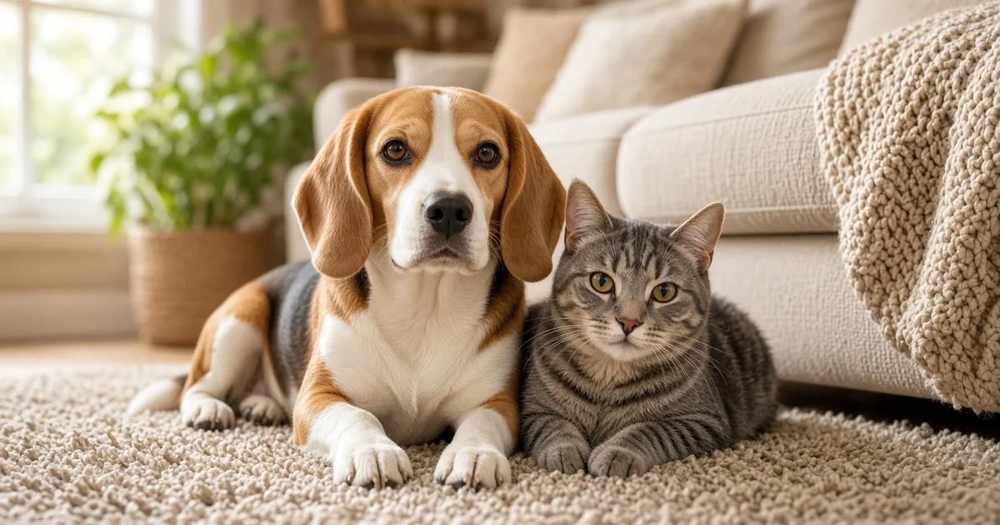

If your dog or cat ate a nicotine pouch (such as Zyn® or another brand), chewed a can, or got into a pile of used pouches, call your veterinarian, ASPCA Animal Poison Control at (888) 426-4435, or Pet Poison Helpline at (855) 764-7661 now, even if your pet seems fine. Do not make your pet vomit at home unless a vet tells you to.

Pick the pouch strength, enter how many pouches (used or unused) and your pet's weight, and get an urgency level to share with your vet.
What to do right now
- Move your pet away and pick up the can, any loose pouches, and used pouches from trash or the floor.
- Read the strength on the can (mg of nicotine per pouch) and check the ingredients for xylitol.
- Count how many pouches are missing, used and unused, and note your pet's weight and the time.
- Call your veterinarian, ASPCA Animal Poison Control at (888) 426-4435, or Pet Poison Helpline at (855) 764-7661 now.
- Do not make your pet vomit, and do not give milk or antacids, unless a vet or poison control tells you to. Antacids can increase how much nicotine is absorbed.
- If your pet is shaking, collapsing, having a seizure, or choking, go straight to an emergency vet.
How much nicotine is in a pouch?
The strength is printed on the can as mg of nicotine per pouch. Pouches sold in the US are listed from about 2 to 12 mg per pouch on brand websites and the FDA's list of authorized nicotine pouches, and some products are stronger. Cans commonly hold 15 or 20 pouches, so a whole can may hold well over 100 mg of nicotine.
Used pouches are not empty. In a 2026 clinical study (Azzopardi et al., Journal of Clinical Pharmacology), pouches used for 30 minutes still held more than half of their nicotine. Count used pouches like fresh ones.
Signs of nicotine poisoning have been reported in dogs at doses as low as 1 mg of nicotine per kg of body weight. For a 10 lb (4.5 kg) dog, one 6 mg pouch is already about 1.3 mg per kg. This is a math example, not a safe amount. The nicotine calculator does this math for you and never shows a safe result.
Dogs vs cats: how the risk differs
| Dogs | Cats | |
|---|---|---|
| Toxic dose | Signs reported from about 1 mg per kg. 9.2 mg per kg is reported as the minimum lethal dose. | No established toxic dose. Cats in poison control case data were reported at about 1.7 mg per kg and higher. Any amount is an emergency. |
| Body size | Small dogs can reach a risky dose with just one or two pouches. | Cats are small, so even one pouch can be a large dose for their size. |
| Swallowing the pouch or can | Dogs are more likely than cats to swallow foreign objects, including plastic. | Cats often swallow items while playing with them, and very small objects can block the gut of a small cat. |
Symptoms and how fast they start
- Drooling, vomiting, and diarrhea
- Agitation, restlessness, or fast breathing
- A racing or slow heartbeat
- Tremors, twitching, or wobbly walking
- Seizures
- Weakness, collapse, or shallow breathing after large doses
Nicotine is a fast-acting toxin with a narrow safety margin (Pet Poison Helpline). Signs usually appear within 15 to 90 minutes. Mild cases may settle within a few hours, while severe cases can last more than 24 hours. Get care before signs start if you can.
Choking and blockage: the pouch and can matter too
The FDA describes nicotine pouches as small synthetic fiber pouches, which do not digest, and cans and lids are plastic or metal. A swallowed pouch, several pouches, or a chewed can piece can lodge in the throat, stomach, or intestines. The Merck Veterinary Manual describes gut obstruction as an emergency, notes that dogs often swallow undigestible objects such as plastic, and says very small objects can block the gut in small pets like small cats.
Watch for gagging, repeated swallowing, vomiting, belly pain, not eating, or no stool, and tell your vet if any part of the can is missing.
Check the ingredients for xylitol
Ingredients vary between products. Pet Poison Helpline notes that some nicotine products contain xylitol, a sweetener that can cause a dangerous drop in blood sugar and liver injury in dogs. Check the ingredients for xylitol on the can. If it is listed, tell poison control and also run the xylitol calculator.
What the vet may do
There is no antidote for nicotine. If it is safe, the vet may make your pet vomit using a medicine and may give activated charcoal, then IV fluids. Heart rate and rhythm are monitored, and medicines are used for tremors or seizures. X-rays may be used if a pouch or can piece might be stuck. Read more in My dog ate nicotine: cigarettes, gum, patches, and vapes.
How to prevent it
- Keep cans closed and up high, not in coat pockets, purses, or cup holders.
- Put used pouches in a lidded trash can, not loose in a bin, ashtray, or on the floor.
- Ask guests to keep bags off the floor.
Related: My dog ate nicotine, My dog ate xylitol, and the pet poison-proofing checklist.
Pick the pouch strength, enter how many pouches (used or unused) and your pet's weight, and get an urgency level to share with your vet.
Frequently asked questions
My dog ate a Zyn or another nicotine pouch. What should I do?
Call your vet or ASPCA Animal Poison Control at (888) 426-4435 now, even if your dog seems fine. Check the can for the mg per pouch, count how many pouches are missing (used and unused), and note your dog's weight and the time. Do not make your dog vomit at home unless a vet or poison control tells you to.
Can one nicotine pouch hurt a dog?
Yes, it can. Signs of nicotine poisoning have been reported in dogs at about 1 mg of nicotine per kg of body weight. For a 10 lb (4.5 kg) dog, a single 6 mg pouch is already about 1.3 mg per kg. Larger dogs have more margin, but no amount of nicotine is considered safe, so call for any amount.
My cat chewed a Zyn pouch. Is that an emergency?
Yes. There is no established toxic dose of nicotine for cats, and cats are small, so even one pouch can be a large dose for their size. Treat any nicotine a cat eats as an emergency and call your vet or poison control now.
Is a used nicotine pouch still dangerous?
Yes. In a 2026 clinical study, pouches used for 30 minutes still held more than half of their nicotine. Count used pouches the same as fresh ones when you talk to your vet or poison control.
How fast do symptoms start after a pet eats a nicotine pouch?
Nicotine acts quickly. Signs such as drooling, vomiting, agitation, and a fast heartbeat usually start within 15 to 90 minutes. Mild cases may settle in a few hours, but severe cases can last more than 24 hours.
Can a swallowed pouch or can cause a blockage?
It can. Pouches and can pieces are not digestible. The Merck Veterinary Manual notes that very small objects can block the gut in small pets such as small cats, and that dogs often swallow plastic objects. Vomiting, belly pain, or not eating after swallowing a pouch or can needs a vet.
Do nicotine pouches contain xylitol?
Ingredients vary by product, and Pet Poison Helpline notes that some nicotine products contain xylitol, which is toxic to dogs. Check the ingredients for xylitol on the can. If it is listed, tell poison control and also use the xylitol calculator.